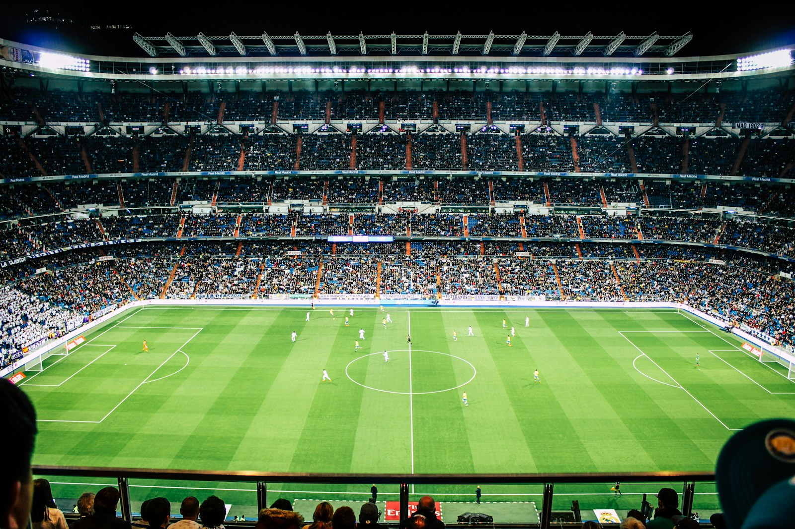

Análises
Como a ocupação dos espaços transforma uma partida
Uma leitura didática sobre amplitude, profundidade e decisões coletivas.
Portal acadêmico de jornalismo esportivo
Segunda-feira · 14 de setembro de 2026

Uma leitura didática sobre amplitude, profundidade e decisões coletivas.
Planejamento organiza treino, descanso e comunicação do elenco.
Formato da competição influencia planejamento e uso do elenco.
Futebol aproxima gerações e guarda memórias de uma comunidade.
Posicionamento e leitura do lance podem criar boas oportunidades.
Orientações objetivas ajudam jogadores a interpretar cada momento.
Os clubes demonstrativos organizam as relações entre notícias, cidades e campeonatos sem criar uma área de partidas.